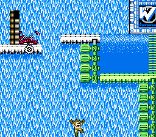
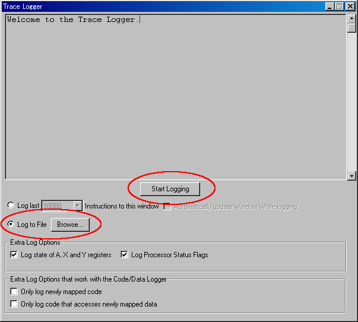
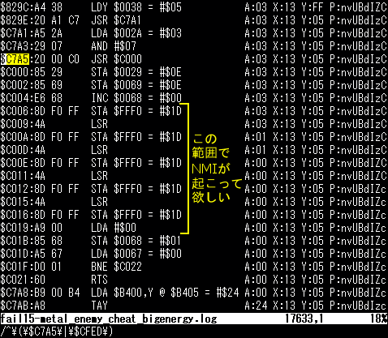

バブルマンステージでのディレイ下スクロールは、ディレイの量が重要なようで す。そこで、ディレイの計測方法をまとめておきます。
まず、Shinryuu氏のリプレイを引き継いで適当にプレイ(例えば、落下しながら1 号を3回発射するなど)し、落下後までのリプレイを作成します。
そのリプレイを再生し、下図のようにロックマンの片足が画面下端に触れるとこ ろまで進めます:
FCEUXのメニューから "Debug" → "Trace Logger" を開き、"Log to File" を選 択し、適当なログファイル名を設定し、"Start Logging" を押します:
リプレイを5フレームほど進めてから、Trace Loggerの "Stop Logging" を押しま す。これでトレースログが指定したログファイルに出力されます。
テキストエディタでログファイルを開き、行頭の "$C7A5" を検索(1つしかヒット しないはず)して行番号をメモ。そして、その直後にある行頭の "$CFED" を検索して行番号をメモ。
上の画像は、メタルブレードで左上の敵を2体倒し、チートで大エネルギーを2個 出し、さらにメタルブレード2, 3発目も撃ってから落下した場合のトレースログです (敵撃破とアイテム出現は落下と同時に起こるようにしています)。
上の画像では、$C7A5 が実行されたのが17633行目で、直後にNMI($CFED)が発生し たのが18330行目となっています。また、他の $CFED を検索してみると常にNMI待ち ループ($C08E-$C090)の後に実行されているので、このフレームではディレイが発生 していることがわかります。
単純に行数を引き算すると、$C7A5 から直後のNMI($CFED)までの間に約700命令ほ ど挟まっていることになります。NMIは常に1/60秒周期で発生するので、望みの場所 でNMIを発生させるためには、$C7A5 の前に約700命令の余計な処理を挟む必要がある ということになります。つまり、ディレイが約700命令分不足して います。
後は色々な落下パターンを試して同様にトレースログをとり、不足ディレイを計 測していけば、どのような行動がディレイを引き起こしやすいのか、ディレイの限界 はどの程度か、などがある程度わかると思います。ちなみに、メタルブレードに切り 替えた後1発も撃たずに単に落下した場合だと、不足ディレイは約2700命令となるよ うです。
もし、不足ディレイが100命令未満となるようなパターンが見つかったならば、そ れはかなり惜しいパターンだということになるので、細部を微調整していけばディレ イ下が成功する可能性が大きいです。こうした状況ではbotを併用するといいかもし れません。
なお、成功例(このディレクトリ内の C022_success.fm2)のトレースログをとって みると $C7A5 の実行が失敗例に比べて1フレーム遅くなっていますが、これは落下直 前にポーズしているために落下速度が遅いのが原因だと思います。
まだ試行数が少ないので多少の揺れはあると思います。が、行動の細部を色々変 えたとしても数百命令単位で変化することはなさそうです(断言はできませんが)。
何もせず単に落ちる 約2700命令不足 1号*3 約1000命令不足 1号*2 約1600命令不足 1号*1 約2150命令不足 メタル*3, 敵2体撃破、1UPアイテム*2(落下と同時に出現) 約650命令不足 メタル*3 約1500命令不足 メタル*2 約1750命令不足 メタル*1 約2300命令強不足 エアーシューター 約1600命令強不足
なお、敵撃破時に出現するアイテムの種類によっても若干ディレイが変化するよ うです。チートで1UPアイテム*2を大エネルギー*2に変えてみたところ、ディレイが 約20命令減少しました。
FCEUXでリプレイを記録していると、たまにリプレイファイルが書き出されていな いように見えることがあります(バグと思われる)。この場合、FCEUXのサブディレク トリのどこかにmovies/ というディレクトリが掘られてそこにリプレイが書き出され ていると思うので、適当に探してみて回収してください。